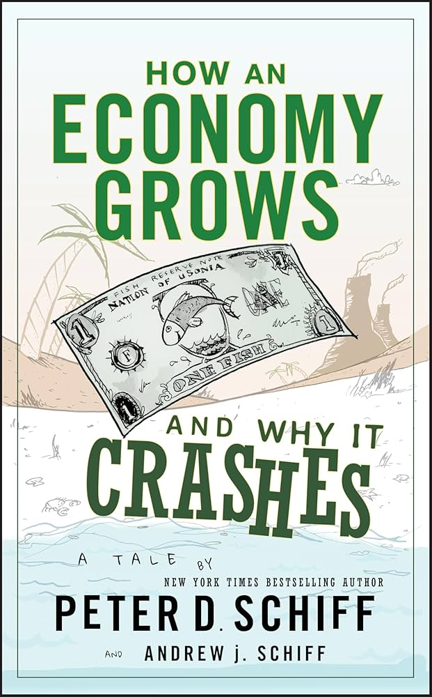

个人成长
Atomic Habits (原子习惯)
《Atomic Habits（原子习惯）》 是 James Clear 所著的一本个人成长书，核心观点是： 微小的行动改变，可以在长期累积出巨大效果 。作者提出，习惯不是靠意志力维持，而是靠 系统化设计 才能持续。书中用“行为改变四法则”解释如何建立好习惯、戒除坏习惯： 让它显而易见、让它有吸引力、让它轻而易举、让它令人满意 。这四条原则分别对应触发、渴望、反应与奖励四个行为阶段，帮助读者从环境、动机与反馈机制三个维度重塑日常行为。
Clear 强调身份认同在习惯中的决定性作用： 你做的每一个小行动，都是在为你想成为的人投票 。因此，真正的改变不是目标导向，而是身份导向。书中通过大量案例说明，小习惯带来的 1% 进步，在时间复利作用下将产生惊人的差距。
《Atomoic Habits》不仅提供方法论，还给出可执行工具，如习惯追踪、环境优化、实施意图等。全书强调：你无法决定未来的结果，但可以打造让好结果“自然而然发生”的系统。